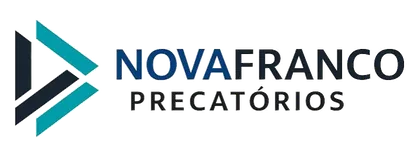

Antecipe seu precatório municipal e receba o valor à vista — sem burocracia, sem surpresa, sem enrolação.
📍 Especialistas em precatórios do Município de Angra dos Reis e demais municípios do Rio de Janeiro.
Nossos especialistas jurídicos enviarão um relatório de viabilidade gratuitamente.
A união entre a agilidade operacional e o rigor institucional do mercado corporativo.
Análise de viabilidade jurídica em até 24 horas. Processo estruturado para creditar o valor acordado na sua conta no menor prazo do mercado.
Operação integralmente registrada por escritura pública de cessão de crédito em cartório. Auditoria jurídica rígida de ponta a ponta.
Taxas de deságio justas e transparentes baseadas em taxas financeiras reais de mercado. Sem taxas ocultas, pegadinhas ou tarifas extras.
Procedimento limpo, transparente e juridicamente seguro.
Você realiza a estimativa com o nosso simulador inteligente e envia os dados básicos para darmos início ao protocolo.
Nossa banca de especialistas analisa as certidões e a regularidade do precatório para emitir uma proposta formal final e transparente.
Assinamos a escritura pública de cessão de direitos de forma digital ou física no cartório e o dinheiro é transferido diretamente para a sua conta.
Respostas claras sobre a antecipação do seu precatório.
Nossa equipe está pronta para analisar seu precatório gratuitamente.
Quero antecipar meu precatório →